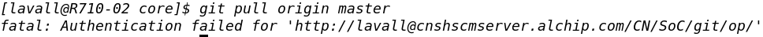
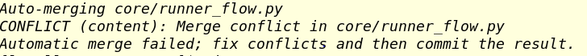
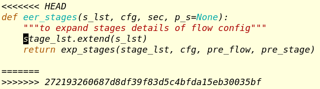
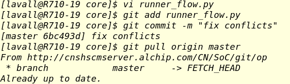

Git User Reference¶
Git is an open source version controlling software for users cooperation on code management.
Common Issues¶
- make sure your git version is correct. source /proj/onepiece4/op_env.csh
[guanyu_yi@utah: /proj/OP4/SOFTWARE/WORK/guanyu_yi/ws]$ which git
/proj/onepiece4/Tools/git_2.16.2/bin/git
git pull origin master
fatal: Authentication failed:
- ** Please confirm that you have entered the correct Windows AD password ! **
error: Automatic merge failed
normal solution:
- Fix conflicts manually
- Commit the fixed file
- Re-pull
- The content of the conflict is located between “<<<<<<” and “>>>>>>>”, separated by “=======”. Keep the correct parts and remove the delimiters and unwanted content.
optional solution: git stash
- Before pull, stash all change:
git stash - Git pull origin master:
git pull origin master - Fix conflicts manually:
git stash pop
- Before pull, stash all change:
Force overwrite modified content !!! (carefully used)
git fetch --allgit reset --hard origin/mastergit pull